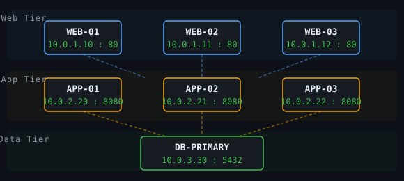
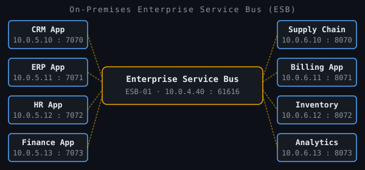
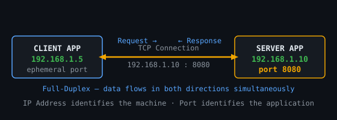
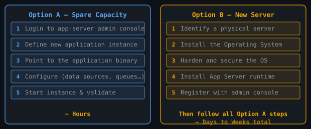
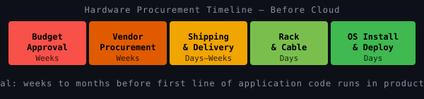
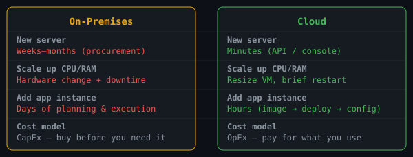

Before we redesign for the cloud, we must understand what we are redesigning from. This session covers the architecture and deployment reality of the pre-cloud data-centre era — and why simply moving to the cloud is not enough.
Every enterprise ran one or both of these architectural patterns. Understanding them is essential context for what we had to rethink when moving to the cloud.
Web Server — handles HTTP, serves static content.
Application Server — executes business logic.
Database Server — persistence and queries.
Each tier ran on dedicated physical or virtual machines with well-known, static IPs. Scaling meant adding more machines to a tier.
The Enterprise Service Bus (ESB) acted as a central message broker connecting disparate systems. Under Service-Oriented Architecture (SOA), each application exposed services consumed by others via the bus.
The ESB handled routing, transformation, and orchestration — avoiding brittle point-to-point wiring between every pair of applications.
Every tier had fixed, assigned IP addresses. Other applications and services simply hard-coded or configured these addresses — they almost never changed.

Rather than applications wiring directly to each other (creating a spaghetti of point-to-point connections), the ESB centralised all inter-application communication through one well-known address and port.

Applications communicated using Transmission Control Protocol / Internet Protocol (TCP/IP). Every server had a fixed IP address. Each application listened on a port number. Together, they formed the endpoint address:
192.168.1.10 : 8080Any client that knew this pair could establish a connection. The channel was full-duplex — data could flow in both directions simultaneously, making it suitable for request/response, streaming, and long-lived connections alike.

There were two scenarios. Both required careful planning and execution, but the timeline differed dramatically depending on whether spare capacity already existed.

Even a routine scale-out (adding one more application-server instance) was effectively equivalent to a full new deployment. Moving an application from one server to another carried the additional risk of silently breaking every other application that had been configured with its old IP and port.
Migrations ran Friday night through Sunday. Teams arrived Monday morning uncertain whether all systems would work as expected.
Application downtime during migrations regularly ran into hours. Complex estates with many dependencies could require 24–48 hours of downtime.
Every downstream dependency had to be mapped. Every configuration had to be updated. A single missed endpoint could cascade into a Monday morning crisis.
Increasing RAM or CPU on a bare-metal server was a physical hardware task. Even on VMs it typically required a scheduled maintenance window and downtime.
With Virtual Machines, the OS and application-server stack was pre-baked into a reusable image. Deployment could begin from application install rather than bare-metal OS installation, compressing the cycle significantly.
Network and load-balancer configuration still needed updating with the new VM's IP and port. But overall the cycle shrank from weeks to days.

Internal finance sign-offs traversed multiple management layers. Unplanned capacity requests were especially slow.
Price negotiation, lead-time commitments, and SLA agreements with hardware vendors consumed additional weeks.
Hardware shipped from manufacturer to data centre, physically racked, and cabled into the network switch fabric.
Only after all of the above could the OS installation and security hardening begin — before the application was even touched.
Cloud providers solved the hardware procurement problem entirely. With pre-baked VM images, self-service APIs, and extensive automation, standing up a new server collapsed from months to hours.

Need ten more servers? Spin them up in minutes. Need a hundred? Same API call. No procurement cycle, no waiting.
CLI tools, APIs, and Infrastructure-as-Code (IaC) templates provision fully configured VMs in minutes. Deployment pipelines handle the rest automatically.
Switch from CapEx (buy before you need it) to OpEx (pay for what you use). Scale down just as easily as you scale up.
The cloud promised fast, cheap capacity — but most enterprise application estates were not built to exploit it. Six common obstacles blocked or complicated migration:
Many enterprises adopted "lift and shift" — moving applications with minimal changes. This transplanted on-premises habits into a metered cloud billing model, with predictably expensive results.
Every pain point we explored today — static IPs, monolithic deployments, hard-coded addresses, over-provisioning — has a cloud-native pattern that directly addresses it. Understanding the problem is the first step to understanding the solution.
We move from what we had to what we need — cloud-native design patterns: microservices, service discovery, circuit breakers, auto-scaling, containerisation, and beyond.
Applications designed for the cloud are efficient, resilient, observable, and independently deployable. Each pattern we study directly solves a failure mode we examined today.
Looking at the six obstacles in slide 11 and the five post-migration problems in slide 12 — which do you think is the hardest to solve, and why?